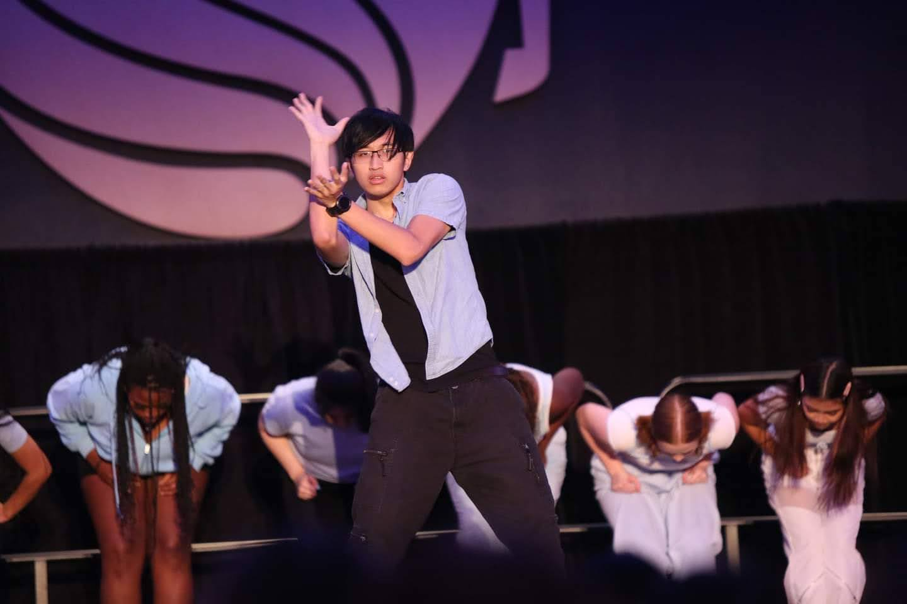

About Me
Background
I was born in the Philippines and moved to Florida when I was young. In high school, JROTC played a major role in building my confidence, discipline, and leadership skills. After failing my first attempt to join the Drill Team, I practiced daily until I earned my spot, which taught me the importance of persistence and hard work. I eventually became a Cadet Captain Company Commander, where I learned how to lead a team, stay organized, and take responsibility for results.
Engineering
Throughout college, I gained experience in embedded systems, web development, and game design through both individual and team-based projects. Working in group environments helped me develop strong communication skills, adaptability, and the ability to solve problems under pressure.
In one of my projects, our team encountered a major hardware failure less than a week before the deadline when our circuit boards stopped working. With limited time remaining, I stepped into a larger role to help troubleshoot the issue, reorganize our tasks, and keep the team focused on completing the project. By staying composed and working efficiently, we were able to redesign and fix the problem in time, and the final system functioned successfully in all required aspects.
Experiences like this have strengthened my ability to stay calm in difficult situations, take initiative when needed, and work with a team to bring complex projects to completion.
Dance
Dance has been a major part of my life for years. I've been a member of Komodo, a professional dance crew in Orlando, for the past two years. Before that, I was part of Fresh Off the Beat, the hip-hop/contemporary dance team of the Filipino Student Association at UCF, where I also spent a year in a leadership role. My main style is tutting, an intricate type of dance that focuses on angles and visual patterns. Through dance, I've gained experience performing, competing, freestyling, and working closely with a team, which has strengthened my creativity, discipline, and confidence.
Gaming
In my free time, I enjoy playing video games, ranging from competitive multiplayer games like Dead by Daylight and Valorant to story-driven single-player games like The Last of Us and the Final Fantasy series. Gaming has helped me develop problem-solving and quick decision-making skills. I've also occasionally streamed on Twitch mainly for friends and personal enjoyment.